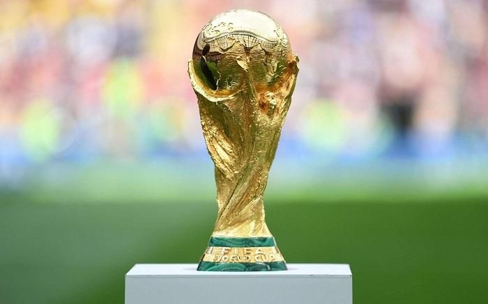
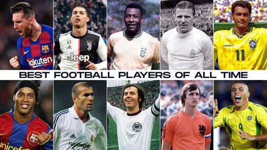

Major Football Competitions: The Stages of Glory
Football competitions are the heartbeat of the sport, providing the stage where legends are born and history is written. These tournaments range from global spectacles involving nations to elite club competitions that showcase the highest level of tactical play.
The Pinnacle: International Tournaments
National team competitions represent the highest honor a player can achieve, playing for their country's pride.
- FIFA World Cup: Established in 1930, it is the most-watched sporting event on Earth. Held every four years, it determines the world champion among nations.
- UEFA European Championship (The Euros): Featuring Europe's top nations, this tournament is often considered nearly as difficult to win as the World Cup due to the concentration of elite teams.
- Copa América: The oldest international continental football competition, featuring the powerhouse nations of South America like Brazil and Argentina.
Elite Club Football
Club football is played year-round and represents the commercial and technical peak of the sport. These competitions are divided into domestic leagues and continental "Super" leagues.
UEFA Champions League
The Champions League is the most prestigious club trophy in the world. It brings together the top-ranked teams from European leagues (like Real Madrid, Bayern Munich, and Manchester City). The "Anthem" and the iconic "Starball" logo have become symbols of football excellence.
The "Big Five" Domestic Leagues
Most football fans follow one of the major European leagues, known for their history and star-studded rosters:
- English Premier League: Known for its intensity, global broadcast reach, and immense financial power.
- La Liga (Spain): Famous for technical brilliance and the historic "El Clásico" rivalry between Real Madrid and Barcelona.
- Bundesliga (Germany): Celebrated for high fan attendance, safe standing sections, and fast, attacking football.
- Serie A (Italy): Historically known for tactical mastery and world-class defending.
- Ligue 1 (France): A league known for producing incredible young talent and world-class superstars.
The Domestic Cup Tradition
In addition to league play, most countries host "Knockout" cups, such as the FA Cup in England. These are unique because they allow tiny, amateur "underdog" teams to play against billion-dollar professional giants, leading to the famous "Giant Killings" that fans love.
The Evolution of Women's Competitions
The FIFA Women's World Cup and the Women's Champions League have seen explosive growth in recent years. With record-breaking stadium attendances and rising professional standards, these competitions are redefining the global landscape of the sport.
Summary of Competition Formats
Most football competitions follow one of two formats: League Format (where every team plays each other and points are totaled over a season) or Tournament Format (which uses a "Group Stage" followed by "Knockout Rounds" where the loser is eliminated immediately).

Football Players: Icons, Legends, and Game Changers
Football (soccer) is not just about teams and tactics — it is defined by the extraordinary individuals who have shaped its history. From skillful dribblers to prolific scorers, visionary playmakers to tactical leaders, football players are celebrated around the world for their talent, influence, and legacy.
What Makes a Football Player Great?
Great players combine a mix of:
- Technique and skill: Exceptional ball control, dribbling, and creative play.
- Game intelligence: Reading the match and making decisive moves.
- Consistency and longevity: Performing at the top level over many years.
- Impact on culture: Inspiring fans and shaping football history.
Most Impactful Players in History
Pelé – “The King” of Football
Pelé is widely regarded as one of the greatest footballers ever. A natural scorer with a complete skill set, Pelé became a global ambassador for football at a time when the sport was spreading around the world. He won three FIFA World Cups (1958, 1962, 1970) — a record unmatched by any other player.
Diego Maradona – The Magical Genius
Diego Maradona is remembered as one of the most charismatic and influential players in football history. His dribbling, creativity, and vision were unmatched, and he almost single-handedly carried Argentina to World Cup glory in 1986. Legendary moments like the “Goal of the Century” against England highlighted his brilliance.
Lionel Messi – The Maestro of Modern Football
Argentine forward Lionel Messi is celebrated as one of the greatest players of the modern era. Known for his extraordinary dribbling and playmaking, Messi has broken numerous records at club and international level, finally lifting the FIFA World Cup to solidify his legacy.
Cristiano Ronaldo – The Goal Machine
Cristiano Ronaldo is one of the most prolific goal scorers in football history. Renowned for his physical power and work ethic, Ronaldo has succeeded in multiple leagues and holds records for goals in elite competitions, becoming a global sporting icon.
Johan Cruyff – The Visionary Pioneer
Johan Cruyff was a revolutionary thinker. As the leading figure behind “Total Football,” a tactical philosophy emphasizing fluid positioning, Cruyff changed how football was played and coached, especially at clubs like Ajax and Barcelona.
Other Legends Who Defined Eras
- Zinedine Zidane: A midfield genius known for technique and elegance.
- Franz Beckenbauer: One of the greatest defenders and pioneers of the “sweeper” role.
- Michel Platini: A midfielder of precision, creativity, and leadership.
Why These Players Matter
Legendary football players matter not only because of individual trophies, but because they helped define different eras of football. They pushed boundaries, inspired millions, and brought joy to fans everywhere.

Football: History, Evolution, and Global Legacy
Football is more than just a sport — it is a cultural phenomenon that has shaped societies and inspired nations. While "football" can mean different things globally, it generally refers to team sports where a ball is advanced primarily by kicking and strategic movement.
Ancient Origins
The roots of the game reach back thousands of years across various civilizations:
- Cuju (China): Military texts from the Han Dynasty describe kicking a leather ball through a small opening.
- Kemari (Japan): An early Japanese game involving foot skills and ball control.
- Mesoamerica: Traditional games used rubber balls long before modern rules existed.
The Birth of Modern Football
The modern game of Association Football originated in 19th-century England. Before this, "mob football" was chaotic and often violent. The turning point came in 1863, when the Football Association (FA) was formed in London to codify the first standardized rules.
This unification led to the founding of the Football League in 1888, creating the structure for the professional sport we see today.
Globalization & Cultural Impact
In 1904, FIFA was formed in Paris to govern the sport globally. By 1930, the first FIFA World Cup was held in Uruguay, evolving into the world's most-watched sporting event. Today, leagues like the Premier League and La Liga are woven into national identities across the globe.
American Football: A Parallel Path
While the rest of the world focused on soccer, American football evolved separately in the U.S. from rugby and soccer roots. Figures like Walter Camp introduced the line of scrimmage and the forward pass, creating the "gridiron" style that led to the NFL and the Super Bowl spectacle.
Football Today
Whether it is the global appeal of the World Cup or the strategy of the NFL, football reflects social values and community spirit. It remains "The World's Game," fostering unity and inclusion across every continent.